Mechanical Files¶
These CAD files describe the current build of the GX16 hand and the EX16 glove. The parts are revised as the design changes, so download the latest archive before starting a new build.
GX16 and EX16 are assembled from 3D-printed structural parts and off-the-shelf hardware. Every part is modelled as a solid in STEP format and named after the assembly it belongs to. The two archives below cover one device each; the actuators, electronics and fasteners that go with them are listed in the hardware bill of materials.
Downloads¶
| Device | File | Size | Contents |
|---|---|---|---|
| GX16 dexterous hand | GX16 STEP file.zip | 3.7 MB | 26 STEP files: palm and palm joints, thumb, index, middle and ring fingers, the palm lateral-swing links and motor mount, flange, control-box shells, silicone fingertip moulds and tactile-fingertip connectors |
| EX16 exoskeleton glove | EX16 STEP file.zip | 2.3 MB | 24 STEP files: the glove base and the index, middle, ring and thumb modules, each broken down into its joint links |
The sizes are the compressed download sizes; the unpacked archives are about 18 MB (GX16) and 16 MB (EX16). Both files were last updated on 18 September 2026.
Model previews¶
Every STEP file in the two archives is rendered below straight from the CAD geometry, so the previews show what the downloads contain. Parts are grouped by file name, and each caption gives the file name and the bounding box of the solid in millimetres, measured on the model. Click a thumbnail to open the full-size render.
Structural parts are shaded in a neutral grey and the silicone fingertip parts in the pink used elsewhere on this site; the shading is a rendering style and carries no material or print information. Both archives store each part on its own, without assembly transforms, so the parts are shown individually.
GX16 dexterous hand
Palm and palm joints

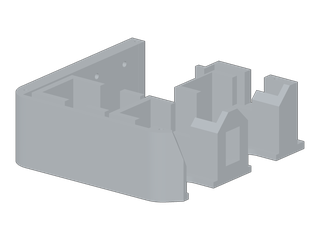

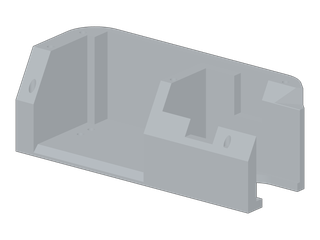

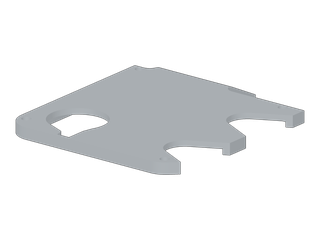

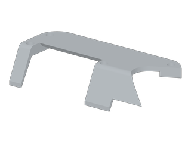

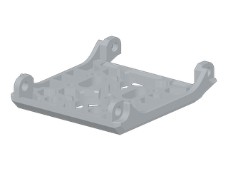

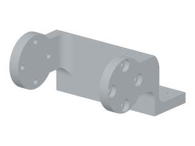
Thumb

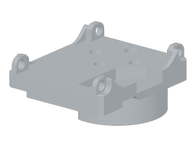

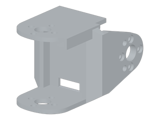

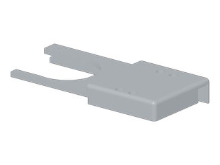

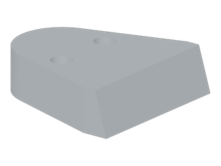
Fingers and finger links

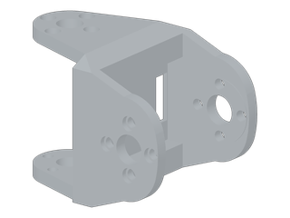

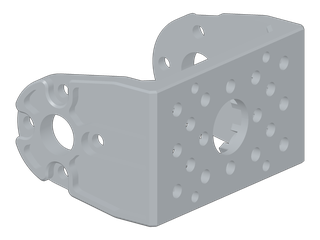

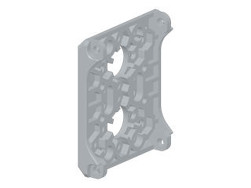

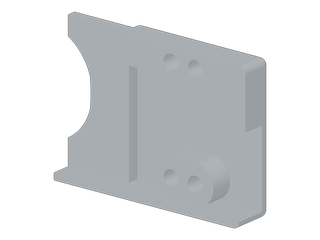

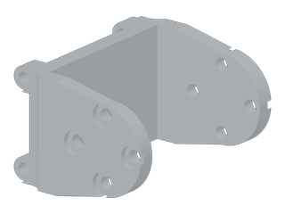

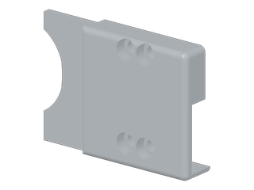
Motor mount and flange

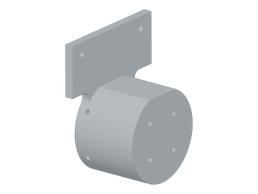

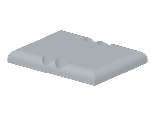
Control-box shells

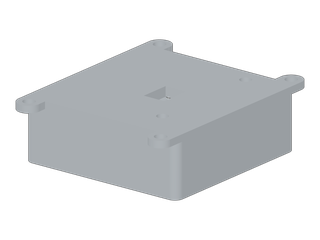

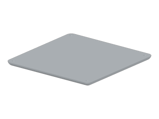
Silicone fingertips and moulds

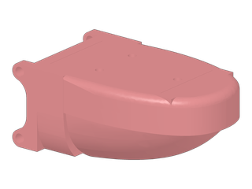

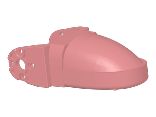

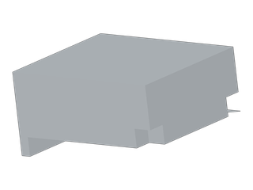

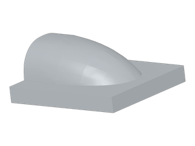
Tactile-fingertip connectors

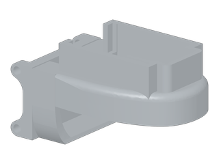

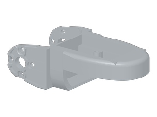
EX16 exoskeleton glove
Glove base

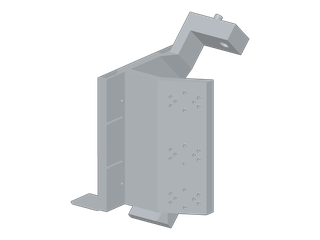
Index module

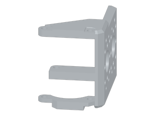

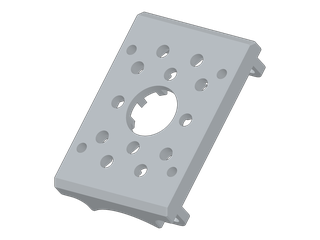

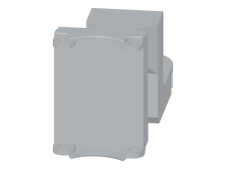

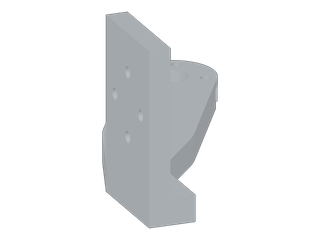


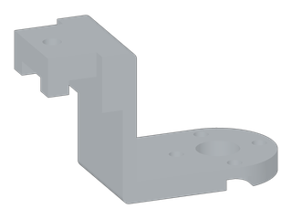
Middle module

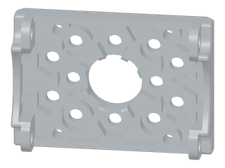

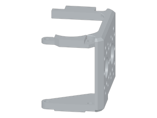

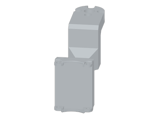


Ring module


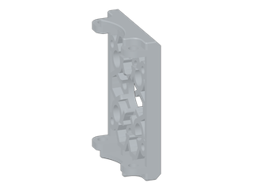

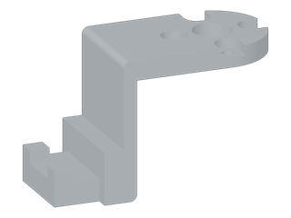
Thumb module


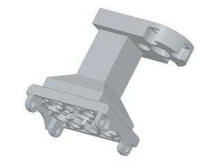

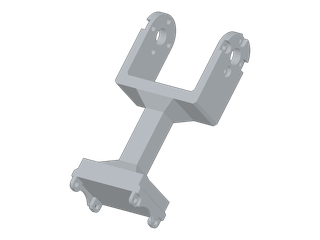

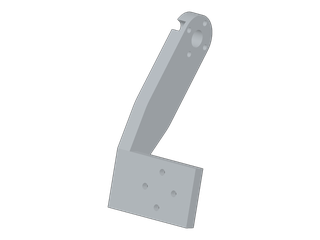

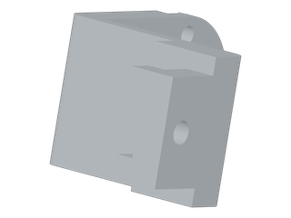
Using the files¶
- Each archive unpacks into a folder named
STEP fileand holds one STEP file per part. The files are solids rather than meshes, so the archives are easier to edit than a mesh export. - STEP is a CAD interchange format, so the parts can be imported into CAD software for editing, or exported as STL or 3MF meshes before slicing them for a printer.
- Models are in millimetres at the nominal design size. Screws and the other standard parts are listed in the bill of materials.
- The structural parts are printed in-house; a Bambu Lab FDM printer is recommended for them.
- Print settings and step-by-step assembly illustrations are still being written and will be added to this page.
Related¶
- Hardware bill of materials — actuators, electronics, hardware and reference prices for one GX16 hand and one EX16 glove.
- Documentation home — release status of the remaining sections.